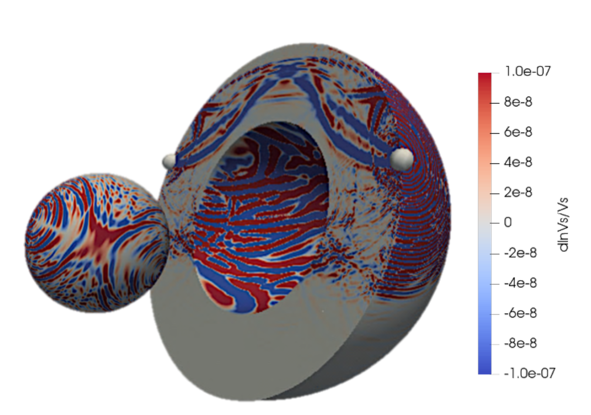

Full-waveform modelling
Using spectral-element simulations and adjoint methods to analyse seismic waveforms beyond ray-theoretical approximations.
My work connects seismic observations with numerical modelling to image Earth's interior and understand how waveforms respond to complex structure, discontinuities, and interfaces.
Using spectral-element simulations and adjoint methods to analyse seismic waveforms beyond ray-theoretical approximations.
Studying sensitivity to mantle discontinuities and the core–mantle boundary to improve imaging of deep-Earth structure.
Developing physics-based simulations and computational workflows relevant for ground-motion and hazard applications.
